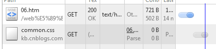
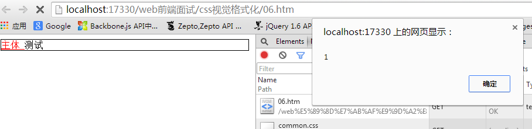
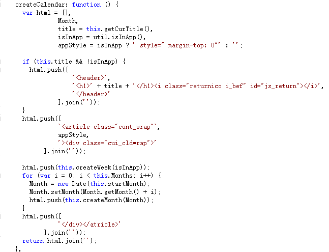
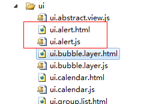
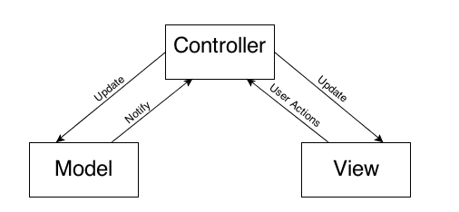
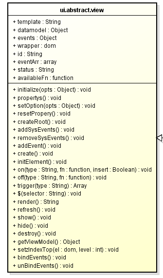

前言
今天微博看到了寒冬大神的面试题，觉得挺有意思的，这里就做一点解答
谈谈你对CSS布局的理解
讲讲输入完网址按下回车，到看到网页这个过程中发生了什么。
谈谈你对Web前端组件化的理解，Web Component会带来怎样的影响
谈谈你对前端资源下载性能优化的经验和思考
现在有很多的MV*框架，你对它们有什么看法
iOS体验好在哪里，Web能赶上么？
网页游戏怎么做？
Hybrid技术应当如何应用？
你最爱的前端框架是什么，为什么？
首先老师的题目都很大，不好答，我这里技术有缺陷，答得不好大家不要喷我，可以好好教育我嘛
浅谈CSS布局
概述
<!DOCTYPE html PUBLIC "-//W3C//DTD XHTML 1.0 Transitional//EN" "http://www.w3.org/TR/xhtml1/DTD/xhtml1-transitional.dtd">
<html xmlns="http://www.w3.org/1999/xhtml">
<head>
<title></title>
<style>
* { margin: 0; padding: 0; }
div { border: 1px solid black; }
#sidebar { position: absolute; left: 0; top: 0; width: 95px; }
#content { margin-left: 100px; }
</style>
<script src="../jquery-1.7.1.js" type="text/javascript"></script>
</head>
<body>
<div id="content">
主体
</div>
<div id="sidebar">
导航
</div>
</body>
</html>
行内元素
<div> <span id="span1">主体 </span><span id="span2">导航 </span> </div>
移动端的建议
总结
一次请求的完整流程
请求返回后，便进入了我们关注的前端模块
<html xmlns="http://www.w3.org/1999/xhtml">
<head>
<title></title>
<style>
div { border: 1px solid black; }
a { color: Red; }
</style>
</head>
<body>
<div>
<a id="span1" href="http://www.baidu.com">主体 </a><span id="span2">导航 </span>
</div>
<link href=" http://kb.cnblogs.com/style/common.css" rel="stylesheet" />
</body>
</html>

<html xmlns="http://www.w3.org/1999/xhtml">
<head>
<title></title>
<style>
div { border: 1px solid black; }
a { color: Red; }
</style>
</head>
<body>
<div>
<a id="span1" href="http://www.baidu.com">主体 </a><span id="span2">导航 </span>
</div>
<script>
document.getElementById('span2').innerHTML = '测试';
alert(1)
</script>
<script>
alert(2)
</script>
<link href=" http://kb.cnblogs.com/style/common.css" rel="stylesheet" />
</body>
</html>

MVC与组件化
View分离
① index.apsx
② index.aspx.cs
<%@ Page Language="C#" AutoEventWireup="true" CodeFile="index.aspx.cs" Inherits="_00综合_11mvc_index" %>
public partial class _00综合_10doc_write_index : System.Web.UI.Page
{
protected void Page_Load(object sender, EventArgs e)
{
}
}
最终这两个文件会和到一起，两个文件之间也可通信，而通信的桥梁是.net一个个被人诟病的组件，比如：
① button组件
② datalist
③ label组件
④ 伟大的gridview
各个组件在C#层面上会拥有一个ID进行约束，.cs文件便可以根据该ID为其注册各个事件，这个与javascript的模型便非常类似了
View分离的第一个优点便是，用户的界面变得干净了，不会有代码混杂的现象，第二个优点便是业务端的代码可以再分离，从而多了数据层、业务层等各个概念
而组件的出现让.net变成了世界上开发最快的语言，这点谁也不可否认，而这些都是前端MVC出现或者组件出现的意义
前端View分离
与asp当初的情况一致，js进行dom操作或者字符串拼接的目的事实上就是想形成一个可供展示的View，前端jser已经再也不能忍受这种代码了：

很多时候，我们想将对应的模板单独的放到一个地方，每次样式若是有更改，只需要更改那个文件即可，只要与之呼应的“ID”不丢失即可，比如这样的结构和代码：

 View Code
View Code<div class="cui-pop-box">
<div class="cui-hd">
<%=title%>
</div>
<div class="cui-bd">
<div class="cui-error-tips">
<%=content%></div>
<div class="cui-roller-btns">
<% for(var i = 0, len = btns.length; i < len; i++ ) {%>
<div class="cui-flexbd <%=btns[i].className%>">
<%=btns[i].name%></div>
<% } %>
</div>
</div>
</div>
这样做的道理是，这个样子做到了表现与行为分离，我们分得开，然后回根据基类的一个机制，让他们最终合到一块，以完成功能
这里我们依旧需要强调一个前提：“ID”关联不可丢失，否则“行为”将不可表现，只要两者间关联不丢，这里便可轻松满足以下逻辑：
① CSS名修改（非标识性CSS名）
② 标签改变
③ 描述性文字改变
......
MVC在前端
重构一书有说，重复性或者类似重复性的代码应该抽象为一个方法，程序员也不傻，在重复使用需要提示框需求后便会学会形成alert组件
组件的出现是代码抽象，代码重用的标识，这个样子既可以减少工作量也可以减少代码容量，而组件的实现与MVC思维的很好诠释

比如以下代码：
View Code
事实上，MVC的任意一块都可以作为单独的模块实现，比如会有这样的需求：一个model实例的变化会影响两个View的显示，但是仅仅对UI一块来说我们做了如下处理：
核心点变成了几个属性：
① template，根据他生成UI
② datamodel，根据他生成viewModel提供给template使用
③ eventArr，业务事件注册点
这个代码是Blade框架的UI基类，他是一个迷你MVC框架
1 propertys: function () {
2 //模板状态
3 this.template = '';
4 this.datamodel = {};
5 this.events = {};
6 this.wrapper = $('body');
7 this.id = _.uniqueId('ui-view-');
8
9 //自定义事件
10 //此处需要注意mask 绑定事件前后问题，考虑scroll.radio插件类型的mask应用，考虑组件通信
11 this.eventArr = {};
12
13 //初始状态为实例化
14 this.status = 'init';
15
16 // this.availableFn = function () { }
17
18 },
template作为View的实现，datamodel作为model实现，我们会根据datamodel与template生成基本的view实体
这里datamodel与template之间会有一个viewModel的映射关系，是为了防止服务器端突然将title变成Title而导致模板解析错误
而整个文件便是一个控制器，view有的事件行为采用javascript委托技术全部注册在根元素上，如此整个UI就活了，他的好处是：
① 具有继承关系，可以拥有统一的资源释放，或者View通信机制
② 代码量也会减少
MVC与组件化的意义
MVC对前端的意义甚大，因为jser对MVC或者分模块的思维的深入理解，我们才会将前端代码做分离，这样会有效的避免多人更改一个文件的难题
这对前端的推动作用不可谓不大！
组件化是对重复工作，重复代码的降低，当然是好东西......
资源加载
前端优化的瓶颈始终在资源加载，只要加载快，无论你代码写的多慢（不要纠结死循环），都一定快，所以前端优化事实上一直都是一个主题：瘦身
压缩
css sprite
延迟加载（主要针对图片）
按需加载（主要针对首屏未用到的UI）
缓存
CDN
预加载
等词语不断的在前端出现，但是一个不可避免的事实是，需求越发复杂，体验要求越高，所以一个前端可能的事实是：
前端资源体积越来越大，避免此事发生不是前端说了算的，需要产品与交互一起努力，清晰、体验好、轻量级的设计谁不喜欢，但是广告营销也不能不考虑，总之此事路还长！
webapp的资源加载
对于webapp来说，首次加载的体积会更加大，因为其要求的库更多，并且网速更慢，这个时候可以采取fake页的方案
我们应该避免页面长时间白页，这个时候便提出了fake页的概念。页面渲染只需要完整的HTML以及CSS，这个便是第一个优化点。
从数据请求数以及请求量来说，webapp首页的响应应该比较慢，若是任由js加载完成再渲染页面，用户很有可能失去耐心。
但是从DOMContentLoaded来看，首页事实上页面响应比较迅速，所以这个加载结束后页面第一屏便渲染结束，然后再异步加载js，当js改变后再动态改变dom结构中的一些关键点
这个时候一个静态HTML页面，装载首屏的基本内容，让首页快速显示
然后js加载结束后会马上重新渲染整个页面，这个样子，用户就可以很快的看到页面响应，给用户一个快的错觉，给人感觉快得多。
是否按需加载
按需加载的话确实会对首屏加载有好处，但是是否按需加载却不一定了，以下面两个体验为例:
资源完全加载
按需加载
PS：我这里debug版本点击时候未做mask处理，大家不要疯狂点击了
这里各位直观的感受是什么呢？是不是，首次加载后后续操作十分流畅，而按需加载的话，每次皆会感觉有点“卡”
按需加载需要加载js和模板，这个过程自然卡，所以真正是不是要按需加载，或者多少资源按需加载有个临界值，需要不断的测试才行
最后，要减少资源的话，代码的质量神马的也需要考虑的，但对容量来说效用可能不是太大
IOS的体验
IOS的体验好，主要好在两点：
① 清晰、简洁、傻瓜化设计，连我妈都可以轻巧的操作苹果手机其简易型可想而知
② 用户行为模拟，IOS体验第二点便是其无敌的动画效果
若是说web应用想赶上（寒冬老师这里赶上一词用得十分贴切，他要说超过估计没人理他了）native开发的话还是有可能
但是如果说web应用要赶上IOS的设计的话，那么还有无数荆棘需要踩过！并且有两大前提：
① 网速快，用户不必关心资源大
② 手机性能好，不说超越PC，至少能“赶上”PC吧
以上两点成立的话，web应用赶上IOS体验才变得可能，简单来说就动画而言，前端有哪些问题呢？
webapp中的动画
难在何处？
所以单单由简单的webapp的切换都如此困难，web应用想赶上IOS的话还要等几年......
Hybrid对前端的意义
应该说Ajax带动了前端的首次革命，而移动端带来了二次革命，而Hybrid将前端推上了风口浪尖！
原来我厂app是使用native开发的，会出现此等问题：一个应用需要养3个团队（ios、android、winphone），而且一旦业务改变会让开发抓狂！
而Hybrid的出现解决了此问题，一套前端代码可以用于四个地方：浏览器、ios、android、winphone，而这个却是互联网公司最需要的
最近两年，移动大潮袭来，各个公司皆在抢占移动端的份额，谁赢了这场战斗谁就是下一代王者，所以出现了一个事实：
市场的占领、业务的扩展是第一位！
所以Hybrid的市场与需求比native大，但是这不是说native没用了，因为更好的体验我们的追求，所以在Hybrid占领市场结束后，可能需要改版为native
除非那时前端的体验能缩小与native的距离
Hybrid开发的问题
Hybrid提高了前端开发的门槛，因为Hybrid的调试难，但是业内也出现了一些调试的方案，我这里有一套Hybrid调试的技巧，有兴趣可以交流
Hybrid 兼容BUG多，总所周知，H5站点上看着好好的程序，一旦到了webview上就出问题了，这个调试也很痛苦
哎，其实Hybrid开发也只是需要一点熟悉度罢了，没有什么可说的，就此打住吧
结语
寒冬老师喜欢出题，我喜欢答题，其中几道题我这里没有什么概念就交白卷了，不知道我的回答是否可以及格
若是寒冬老师或者各位觉得我的回答能勉强及格，左边微博求粉！！！尼玛我粉丝太少了！！！